Video Generation
From a key frame to a multi-shot video
How a video model generates motion, why one long prompt fails, and how to build a story from short shots. Veo, Gemini Omni, Kling, Seedance, Runway, Leonardo. Data as of October 2026.
⏱ 2 min. Welcome. This is the second lesson of the multimodality module: in L04 we made images, today we bring them to life as video.
The plan: watch a finished clip, see how a model makes video, look at typical mistakes on a real failure, then build the clip properly step by step. After the break: the market, a little code, money, quality checks and risks.
Before you start: Teams: when sharing your screen, turn on “Optimize for motion and video”, otherwise the clip will stutter. Start the clip with a click; it plays muted.
A 23-second video built from three 8-second shots
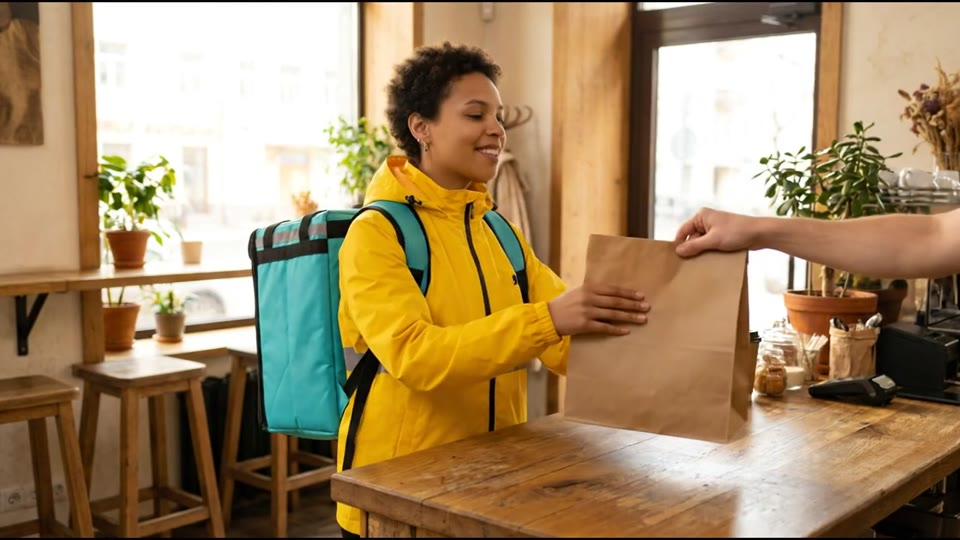
▶ video in the HTML version⏱ 3 min. Start the clip with a click (23 seconds); you may play it twice. Ask the chat: what do you see, how many “takes” were there, where are the cuts?
Answer: three separate 8-second clips from Veo 3.1, each made from a prepared image. Then they were joined with transitions into 23 seconds. At list price that is about $10, not counting failed attempts.
One sentence on sound: the clips have audio, because current models generate it themselves. Today we watch muted; sound is covered in L06.
Teams: when sharing your screen, turn on “Optimize for motion and video”, otherwise the clip will stutter. Start the clip with a click; it plays muted.
Three access layers for video models: chat, web studio, API
- Control
- prompt text only; Flow adds first/last frame and extension
- Billing
- subscription
- Use for
- ideas, quick drafts
- Control
- camera settings, first/last frame, references, multi-shot
- Billing
- credits; Kling has free daily credits
- Use for
- individual videos, homework
- Control
- everything as request parameters; batch jobs
- Billing
- per second of video
- Use for
- pipelines, products
⏱ 4 min. Same structure as the image layers in L04. Chat apps: Gemini app (Gemini Omni, Veo 3.1), Google Flow (scenes, first/last frame, extension), Grok Imagine from xAI. Camera is set with words only.
Web studios: Kling (3.0, Elements, multi-shot, free daily credits), Leonardo (its own Motion 2.0 plus hosted Veo, Kling, Seedance, Hailuo), ByteDance’s Dreamina and CapCut with Seedance, Runway (Gen-4.5 plus hosted models), Luma Ray3.2, Hailuo. These have camera settings and references.
API: Gemini API and Vertex AI (Veo 3.1, Gemini Omni), Kling API, Runway API (also serves Seedance, Veo, Wan, Hailuo), xAI API for Grok Imagine. Billed per second of video. ChatGPT does not make video: Sora was shut down (app in April, API on 24 September 2026).
How a diffusion model generates video frames
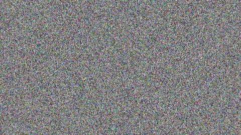
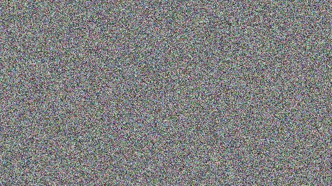
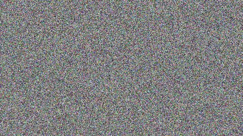
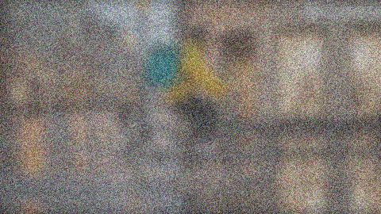
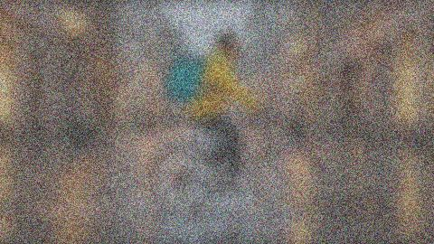
⏱ 4 min. Link to L04: there, an image was also born from noise in dozens of steps. Video is the same, but the model cleans a whole stack of frames at once instead of one. That is why neighbouring frames agree and motion is smooth.
Internally the video is split into small patches: “this region of the frame at this moment”. The text prompt and, if given, the first frame guide the model at every step.
Key point: the model does not compute physics. It has seen many videos of steam, rain and splashes and learned to draw them convincingly. Research (e.g. Physics-IQ, 2025) shows that realistic-looking is not the same as physically correct. So expect errors in contacts (hands, a bag, handlebars), in text and in long scenes.
Text-to-video, the whole story in one prompt: 4 failure types
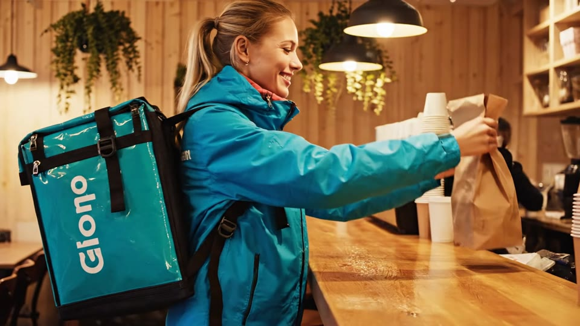
▶ video in the HTML version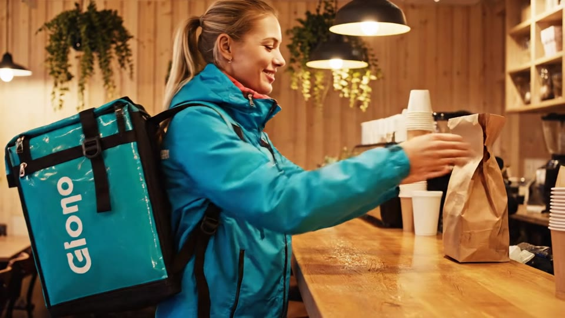
00:02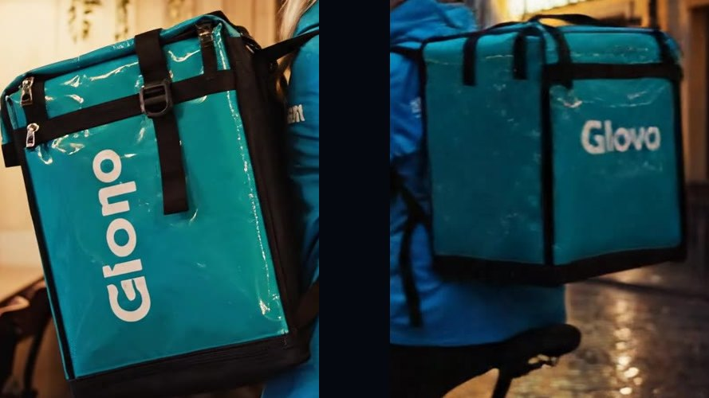
00:03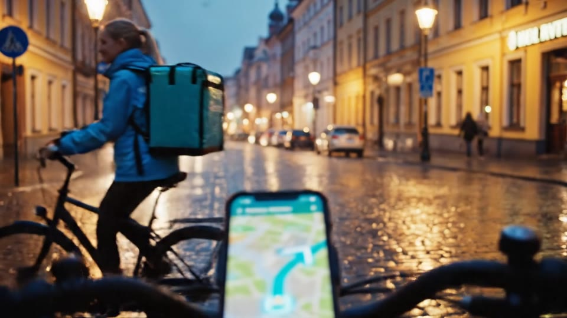
00:05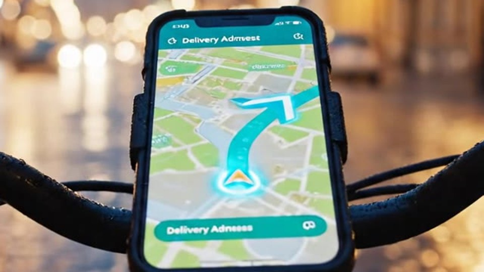
00:07⏱ 5 min. Play the clip with a click (8 seconds), then walk through the four frames. The prompt is written the way you brief a person: everything in one paragraph.
1) Action skipped: the bag never goes into the backpack. 2) Details drift after the cut: the box logo changes. It also shows how a model damages a brand: “Glono” instead of the name. In a commercial clip that is a reject. 3) Space breaks: instead of a clean cut, the handlebars just slide over the shot. 4) The phone screen shows pseudo-letters.
Takeaway: a model cannot “edit” a film because the text asks it to. One clip = one scene and one action. Glovo is just the name of the training case (as in L04 homework); the logo in the clip is an example of what not to do.
Teams: when sharing your screen, turn on “Optimize for motion and video”, otherwise the clip will stutter. Start the clip with a click; it plays muted.
Text-to-video vs image-to-video
and how it moves
+ text about motion
only how it moves
⏱ 5 min. Play both clips one after another. Left: text only. Right: the same courier story, but the model got a ready first image.
Simple explanation: in text-to-video the model has to decide both how everything looks and how it moves, two unknowns at once. In image-to-video the first one is already solved by the approved image. Only motion is left, so there are fewer errors and they are more predictable.
Terms: text-to-video means the input is only text; image-to-video means the input is a key frame plus text. Some tools abbreviate them as T2V and I2V.
Teams: when sharing your screen, turn on “Optimize for motion and video”, otherwise the clip will stutter. Start the clip with a click; it plays muted.
Storyboard: the whole story before the first generation
| # | Frame | Time | Action | Camera | Key frame |
|---|---|---|---|---|---|
| 1 | 0–8 s | Courier takes the bag from the barista and turns to the exit | medium shot, slow push-in | shot1_cafe_pickup.png | |
| 2 | 8–16 s | Rides a bicycle down a wet street at dusk | tracking alongside, low angle | shot2_bike_rain.png | |
| 3 |  | 16–23 s | The route on the map draws itself to the destination pin | digital push-in, slight tilt | shot3_map_route.png |
⏱ 5 min. Before generating anything, the story is split into shots. Our video is three rows: cafe, ride, map. Each row has timing, action, camera move and a key frame file.
The full production template from Creator Tools (the Giant Stories series) has 7 columns: shot and timing, visual, voice-over, image prompt, video prompt, SFX, music. Audio is covered in L06.
Scale: a minute is about 8 shots, an hour about 450. That is why the storyboard lives in a spreadsheet: it drives the budget (later slides) and the acceptance review.
Character sheet as the reference for every shot
- A reference narrows the model’s choices for appearance.
- Veo 3.1: up to 3 reference images. Kling 3.0: Elements, 2–4 images.
- More stable, not guaranteed: review every shot.
⏱ 3 min. We made this character sheet in L04: one person from four angles. The callouts are “anchors” viewers recognise the hero by: face and hair, yellow jacket with a stripe, turquoise box backpack, black trousers and white sneakers.
A reference is not magic; it just narrows the model’s choices. Where it exists: Veo 3.1 takes up to three reference images, Kling 3.0 has Elements (2–4 images). Results are more stable but not guaranteed, which is why we end with a checklist.
Bottom right: frames from our shots 1 and 2. The courier is recognisable.
Fix the key frame in an image chat before generating video
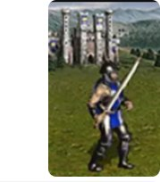
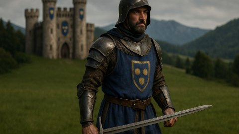
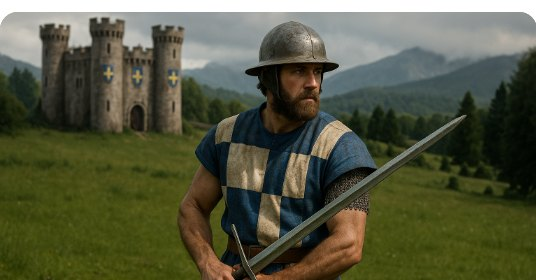
⏱ 4 min. A short example in the style of L04: from a small game sprite we get a realistic frame. The first version is close, but the helmet and tabard are wrong. One precise text edit, and the frame is approved.
Why this matters for video: every mistake is cheaper to fix in the image. An image edit costs seconds and cents. A video regeneration costs minutes of waiting and, for example, $0.40 per second in Veo 3.1. So get the image to “yes” first, then animate it.
Video prompt structure: 6 slots
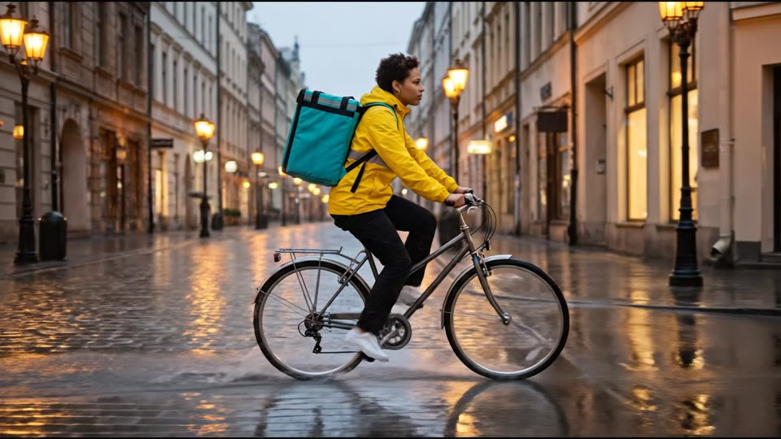
▶ video in the HTML version- Motion verbs (pedals, spinning, tracks): the model needs to know what changes.
- Do not describe the frame again: it is already the input. One identifying detail is enough.
- Describe what should happen. A negative prompt field exists only in some tools (Kling, Wan).
⏱ 6 min. This is the actual prompt used for shot 2. Walk through the colours: 1 camera, 2 who, 3 action, 4 where and when, 5 motion details, 6 light. In L04 images also had 6 slots; in video the key ones are camera, action and motion details.
Three rules. First, motion verbs: the model must understand what changes over time. Second, in image-to-video do not describe again everything visible in the image; one identifying detail is enough. Third, phrase it positively: what should happen. A separate “what not to show” field exists in Kling and Wan, for example; in Veo positive phrasing works better.
Teams: when sharing your screen, turn on “Optimize for motion and video”, otherwise the clip will stutter. Start the clip with a click; it plays muted.
Camera moves and the prompt terms for them
⏱ 4 min. Eight basic moves from standard camera vocabulary. Walk through the diagrams: blue is the camera, yellow is the subject, the green arrow shows how the camera moves. Under each diagram is a ready English phrase for the prompt.
Why models understand this: they learned from videos with text descriptions that used these words. These are simply words the model has seen in training data. Tip: one camera move per shot; “pan + dolly + orbit” in one clip often turns to mush.
In chats (Gemini, Flow) you set the camera with words. Video studios have dedicated controls: Runway has direction and strength per axis, Kling has camera parameters, Luma has preset motion “concepts”.
Controls beyond the prompt: frames, extension, references
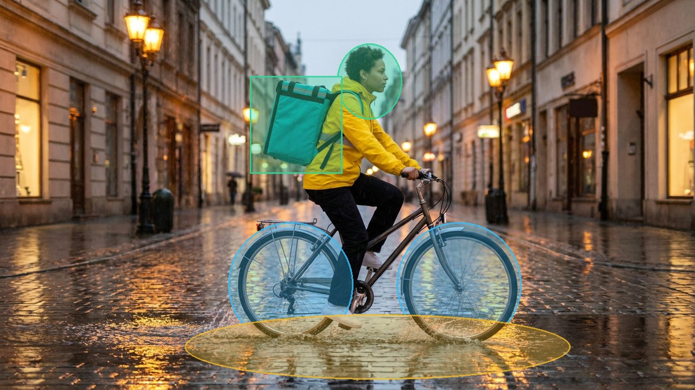
where the courier goes
background stays still
Gemini Omni: +10 s per step, up to 40 s
Kling 3.0 Elements: 2–4 images
⏱ 3 min. Words are not the only steering wheel. On the left is the idea of local control: brush over parts of the frame and draw an arrow for where they move; mark the background as a static zone. That is how Kling’s Motion Brush works (up to 6 elements, arrows drawn on the image). To be honest, it belongs to Kling 1.x–2.x models; Kling 3.0’s description doesn’t list it.
On the right is what is widely available in 2026: first and last frame (the model builds the path between two images), extending a clip in steps (Veo 3.1: 7 s at a time up to 148 s; Gemini Omni: 10 s up to 40 s) and hero references.
The overlay is an illustration of the idea, not an interface screenshot.
Editing: three shots into one 23-second video
ffmpeg command. A person does the editing, not the model.⏱ 5 min. The timeline of our final clip from the real files: three 8-second clips, half-second transitions overlap the clip edges. That is why 8 + 8 + 8 gives 23 seconds, not 24.
The lesson’s point: a model is good at one short shot. A person builds a multi-shot story in editing. Short shots are more stable than long ones, and if one shot fails, you redo only that one.
You can replay the final clip on the right. Teams: when sharing your screen, turn on “Optimize for motion and video”, otherwise the clip will stutter. Start the clip with a click; it plays muted.
Video models: maximum clip length and capabilities
⏱ 5 min. How to read it: the bar is how many seconds one generation gives; on the right, what the model can do. What changed in a year: audio became standard for almost everyone, and typical clip length grew from 5–10 to 10–30 seconds.
Leaders: Google’s main model is now Gemini Omni 1.1 Flash (#1 on LMArena, 21.09.2026). Veo 3.1, which made our clips, still runs in the API and can extend a clip to 148 seconds. On the Artificial Analysis board with audio, Wan 3.0 is first. Boards disagree and change monthly, so always check the date.
Open weights (you can run them yourself): Wan 2.2 and LTX-2. Newer Wan 2.5–3.0 are API-only. OpenAI’s Sora is shut down: the app since 26 April, the API since 24 September 2026, with no replacement; ChatGPT does not make video.
Kling 4.0 Flash (up to 20 s, 720p) has been in early access since 28 Sep. Full 4.0 (up to 30 s) is announced for October; check before class whether it has shipped.
5 minutes for coffee and resting your eyes
Next: code, cost, acceptance, risks and homework.
⏱ 5 min. Press “Start”. Rest only, no chat tasks.
Gemini API: image-to-video in Python
import time from google import genai from google.genai import types client = genai.Client() # key from GEMINI_API_KEY op = client.models.generate_videos( model="veo-3.1-fast-generate-preview", prompt="Tracking shot alongside the courier", image=types.Image.from_file(location="shot2.png"), ) while not op.done: # wait: ~11 s to ~6 min time.sleep(10) op = client.operations.get(op) video = op.response.generated_videos[0].video client.files.download(file=video) video.save("shot2.mp4")
⏱ 3 min. A reference slide; don’t go through the code line by line. The idea: with the google-genai Python library (used in L03 and L04) we send an image and a prompt, wait until the video is ready and download the file.
The difference from images: video takes from tens of seconds to several minutes, so the service immediately returns a “ticket” and we ask every 10 seconds whether it is ready. Price is per second of video: Veo 3.1 $0.40, Fast $0.10, Lite $0.05 at 720p. An 8-second clip costs $3.20, $0.80 or $0.40.
Generation cost: per clip, per minute, per hour of video
| Model | $ per second | 8 s clip | 1 minute | 1 hour | 1 hour, 3 takes per shot |
|---|---|---|---|---|---|
| Gemini Omni 1.1 FlashRunway API, from | $0.034 | $0.27 | $2.04 | $122 | $367 |
| Veo 3.1 LiteGemini API | $0.05 | $0.40 | $3.00 | $180 | $540 |
| Veo 3.1 FastGemini API | $0.10 | $0.80 | $6.00 | $360 | $1,080 |
| Runway Gen-4.5Runway API | $0.12 | $0.96 | $7.20 | $432 | $1,296 |
| Seedance 2.5Runway API, from | $0.20 | $1.60 | $12.00 | $720 | $2,160 |
| Veo 3.1Gemini API | $0.40 | $3.20 | $24.00 | $1,440 | $4,320 |
⏱ 5 min. The point here is scale. One second costs cents, but an hour of finished video is 450 shots of 8 seconds. On Veo 3.1 that is $1,440 with no retakes and $4,320 if each accepted shot takes 3 attempts.
Cheaper models (Lite, Fast, Omni on Runway) are fine for drafts. Final shots go to whichever model passes acceptance. Kling’s web app bills in credits: 12 credits per second of 1080p with audio.
Not included: key frame images, editing, audio and people’s time. Prices change; check the price lists before class.
Acceptance checklist for a generated clip
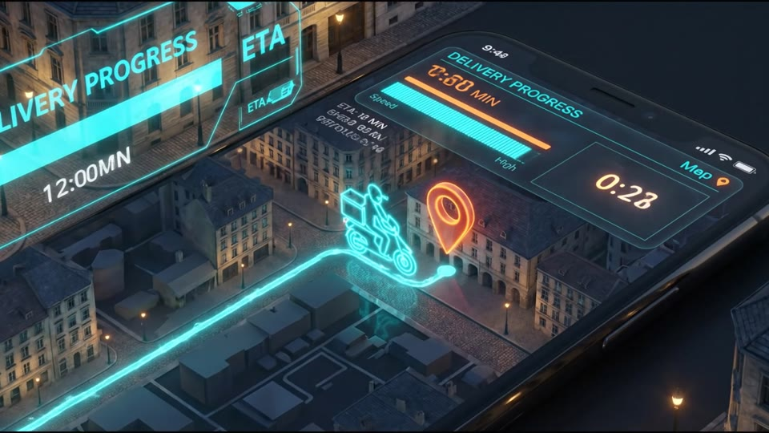
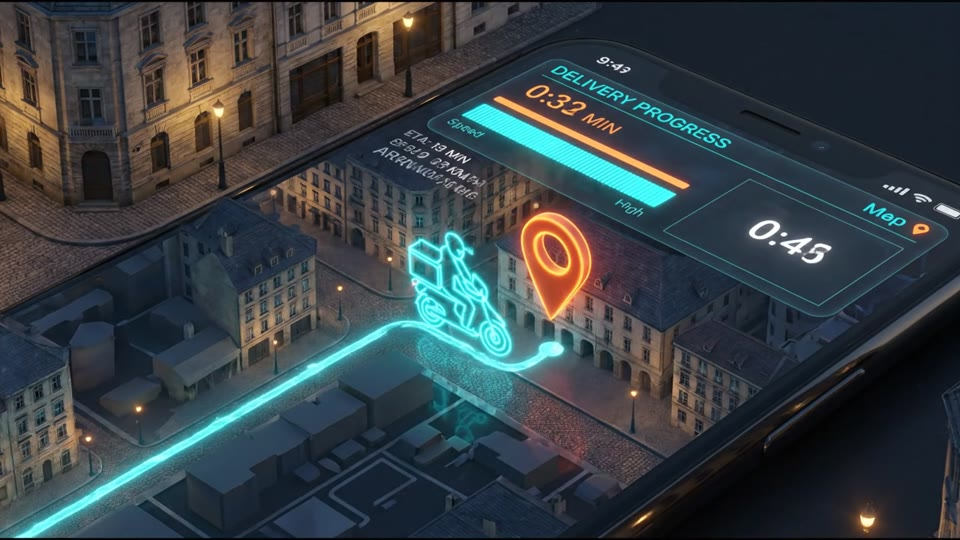
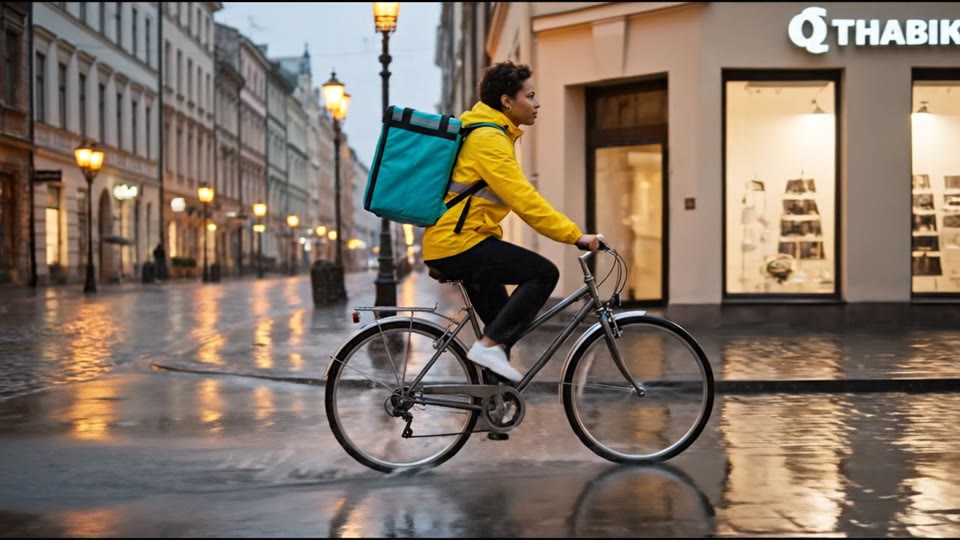
- Hands and objects in contact: no merging or vanishing
- Text and numbers: readable and stable
- Face and clothes: match the reference
- Motion: speed and direction (wheels forward)
- First frame: matches the approved one
- Shot joins: light and colour match
⏱ 5 min. An honest moment: our “good” clip is not perfect either. In shot 3 the timer digits jump, it says Mep instead of Map, and the icon is a moped although the courier rides a bicycle. In shot 2 the shop sign is random letters. Viewers may not notice, but a client will.
So checking is a separate step. Six checklist items: hands and objects, text and numbers, face and clothes, motion, first frame, shot joins. Watch paused and frame by frame. If something fails, redo only that shot.
Tip: add on-screen text and numbers during editing rather than asking the model for them.
Rights, labelling and provenance
⏱ 6 min. On the left is a traffic light. Green: your own generated frames and characters, labelled as AI-made. Amber: other brands and logos, only with permission and a review by company lawyers (remember “Glono” from the failure). Red: real people (colleagues, clients, celebrities), only with written consent.
On the right: how to tell a video is AI-made. Google adds SynthID, an invisible mark in the pixels, to every Veo video. It survives compression and cropping. C2PA is a signature in the file metadata; it is easily lost on re-save or screenshot. You can check SynthID by uploading a video to the Gemini app (up to 100 MB and 90 seconds). Note: the check only finds SynthID, so videos from other services may not be recognised.
Law: in the EU, Article 50 of the AI Act applies since 2 August 2026. Under 50(4) whoever publishes a deepfake must label it; under 50(2) the model provider adds a machine-readable mark. Fines up to €15M or 3% of turnover. In the US, since May 2026 platforms must remove intimate deepfakes within 48 hours (TAKE IT DOWN Act).
Homework 5: animate your L04 key frame
- Text-to-video with one prompt, as a baseline
- Image-to-video from your L04 frame in two services
- Prompts and settings →
video_spec.md - Review with the slide 18 checklist →
video_qa.md
⏱ 5 min. Two tracks to choose from. Track A: animate a product (the L04 packshot) as a short promo with an orbit or dolly-in. Track B: continue the courier story with a riding shot, camera alongside.
Required: first an honest text-to-video attempt with one prompt, then image-to-video from your frame in two different services, prompts in video_spec.md and a check against the checklist in video_qa.md. We grade awareness, not beauty: can you show where and why the model went wrong.
Details and templates are in the L05 homework file.
Lesson summary
⏱ 3 min. Four points: frame first, motion second; one shot, one action; a structured prompt; acceptance checklist and per-second budget.
Teaser: our clips have sound, generated by Veo 3.1 itself. How to control sound and speech is the next lesson, L06. Questions.